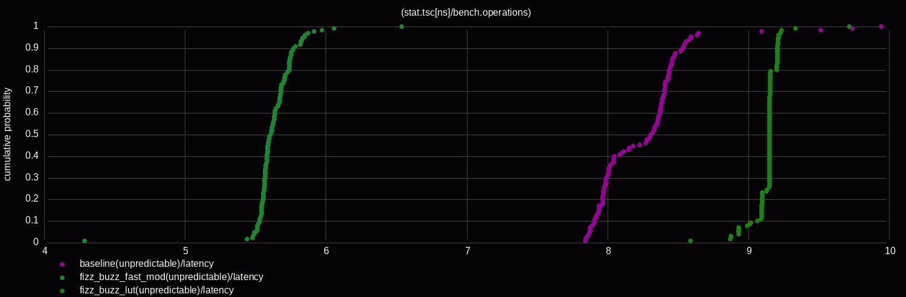

<!doctype html>
<html>
  <head>
    <meta charset="utf-8">
    <meta name="viewport" content="width=device-width, initial-scale=1.0, maximum-scale=1.0, user-scalable=no">

    <title>If You Can't Measure It, You Can't Improve It</title>

    <link rel="stylesheet" href="reveal.js/css/reveal.css">
    <link rel="stylesheet" href="reveal.js/css/theme/white.css" id="theme">
    <link rel="stylesheet" href="extensions/plugin/line-numbers/line-numbers.css">
    <link rel="stylesheet" href="extensions/css/highlight-styles/default.css">
    <link rel="stylesheet" href="extensions/css/custom.css">

    <style>
      .reveal h1, .reveal h2, .reveal h3, .reveal h4, .reveal h5 { text-transform: none; }
    </style>

    <script>
      var link = document.createElement( 'link' );
      link.rel = 'stylesheet';
      link.type = 'text/css';
      link.href = window.location.search.match( /print-pdf/gi ) ? 'reveal.js/css/print/pdf.css' : 'reveal.js/css/print/paper.css';
      document.getElementsByTagName( 'head' )[0].appendChild( link );

      function set_address(self, remote, local) {
        if (window.location.search.match("local")) {
          self.href = local;
        } else {
          self.href = remote;
        }
      }
    </script>

    <meta name="apple-mobile-web-app-capable" content="yes">
    <meta name="apple-mobile-web-app-status-bar-style" content="black-translucent">
  </head>

  <body>
    <div class="reveal">
      <div class="slides">
          <script type="text/template">
          </script>
          </section>

          <section data-markdown=""
                   data-separator="^====+$"
                   data-separator-vertical="^----+$">
          <script type="text/template">
<!-- .element: data-background-image="images/title.png" data-background-size="100%" data-background-color="black" -->

----

#### Performance Is Not a Number!
<!-- .element: style="text-align:left" -->


----

#### Performance Is Not Normally Distributed!
<!-- .element: style="text-align:left" -->




----

#### Performance No Longer Follows Dennard Scaling!
<!-- .element: style="text-align:left" -->


https://www.singularity.com/charts
<!-- .element: style="text-align:left; font-size:22px;" -->

----

### Why?
<!-- .element: style="text-align:left" -->

----

#### Physics [limits]
<!-- .element: style="text-align:left" -->

<table>
  <tr>
  <td>
  <pre style="font-size:18px">
(~) Frequency
  - Base:  3–5 GHz
  - Boost: 5–6 GHz
  - Overclocked: ~9 GHz
  </pre>
  <pre style="font-size:18px">
(⬆️) Transistors
  - More Cores
  - More Caches
  - Improved Execution
  - Improved Parallelism&nbsp;
  - ...<br />
</pre>
  </td>
  <td>
    
  </td>
</tr>
</table>


https://github.com/karlrupp/microprocessor-trend-data
<!-- .element: style="text-align:left; font-size:22px;" -->

----

#### Hardware [effects]
<!-- .element: style="text-align:left" -->


https://chipsandcheese.com
<!-- .element: style="text-align:left; font-size:22px;" -->

----

#### Operating System [noise]
<!-- .element: style="text-align:left" -->


https://makelinux.github.io/kernel/map
<!-- .element: style="text-align:left; font-size:22px;" -->

----

#### Code [...]
<!-- .element: style="text-align:left" -->

----

#### Perf or Nah?
<!-- .element: style="text-align:left" -->

```cpp
Running with 'profiling/instrumenting/tracing' enabled?
Running as a 'different user'?
Enabling 'debug symbols' on optimized build?
Adding 'unused function'?
Adding a 'try/catch' that never throws?
Adding a 'branch' which is never taken?
Removing 'dead code'?
...
```

----

#### "If You Can't Measure It, You Can't Improve It!"
<!-- .element: style="text-align:left;" -->

— Lord Kelvin (William Thomson)
<!-- .element: style="text-align:left; font-size:22px;" -->

----

#### `"what if" rule`
<!-- .element: style="text-align:left" -->

```cpp
what if data regime changes?
what if cache is not as hot?
what if branch is not as predicted?
what if code/data layout changes?
what if ...?
```
<!-- .element: style="text-align:left;" -->

----

#### Profiling -> Benchmarking
<!-- .element: style="text-align:left" -->

----

### How?
<!-- .element: style="text-align:left" -->

----

### What?
<!-- .element: style="text-align:left" -->

```cpp
What if we could measure "what if?"
```

----

#### Latency vs. Throughput
<!-- .element: style="text-align:left" -->


https://qbaylogic.com/cpu-vs-fpga
<!-- .element: style="text-align:left; font-size:22px;" -->

----

#### Always measure
<!-- .element: style="text-align:left" -->

```
Performance Monitoring Unit (PMU)

CPU                      Intel        AMD          ARM
 ├─ Timestamp Counter    RDTSC/RDTSCP RDTSC/RDTSCP CNTVCT_EL0/CNTPCT_EL0
 ├─ Performance Counters RDPMC        RDPMC        PMCCNTR_EL0/PMEVCNTRN_EL0
 ├─ Event Sampling       PEBS         IBS          SPE
 ├─ Branch Recording     LBR          LBR          BRBE
 └─ Processor Trace      PT           -            ETM (CoreSight)
```
<!-- .element: style="text-align:left; font-size:20px;" -->

<br />

##### https://www.intel.com/content/www/us/en/developer/articles/technical/intel-sdm.html
<!-- .element: style="text-align:left; margin: 5px 0px; font-size:20px;" -->
##### https://docs.amd.com/v/u/en-US/40332-PUB_4.08
<!-- .element: style="text-align:left; margin: 5px 0px; font-size:20px;" -->
##### https://developer.arm.com/documentation/ddi0487/latest
<!-- .element: style="text-align:left; margin: 5px 0px; font-size:20px;" -->
##### https://developer.apple.com/documentation/apple-silicon/cpu-optimization-guide
<!-- .element: style="text-align:left; margin: 5px 0px; font-size:20px;" -->

----

#### Always measure
<!-- .element: style="text-align:left" -->

<table>
<tr>
<td></td>
<td></td>
</tr>
</table>

https://www.brendangregg.com
<!-- .element: style="text-align:left; font-size:22px;" -->

----

#### Always measure
<!-- .element: style="text-align:left" -->

```cpp
└─ System
      bcc      # https://github.com/iovisor/bcc
      bpftrace # https://github.com/bpftrace/bpftrace
      ...

    └── Application
          linux-perf  # https://perf.wiki.kernel.org
          intel-vtune # https://www.intel.com/content/www/us/en/docs/vtune-profiler
          amd-uprof   # https://www.amd.com/en/developer/uprof.html
          likwid      # https://github.com/RRZE-HPC/likwid
          dtrace      # https://github.com/opendtrace
          tracy       # https://github.com/wolfpld/tracy
          gperftools  # https://github.com/gperftools/gperftools
          coz         # https://github.com/plasma-umass/coz
          ...
```
<!-- .element: style="text-align:left; font-size:19px;" -->

----

#### Disclaimer
<!-- .element: style="text-align:left" -->

```
Focused on x86-64/linux
Powered by linux-perf + extensions
```
<!-- .element: style="text-align:left" -->

pip install git+https://github.com/perf-labs/perf.git
<!-- .element: style="text-align:left; font-size:22px;" -->

----

#### Modern CPUs primarily bottlenecks
<!-- .element: style="text-align:left" -->

```cpp
Data access
Branch prediction
Instruction supply
```

<!--- todo Wanna be fast has to be in the future-->
<!--- todo Increasing {instructions, µops} per cycle-->
<!--- todo Reducing overall instruction count-->

----

#### Profiling
<!-- .element: style="text-align:left" -->

```
sampling
instrumenting
tracing
...
```

```
collecting
- distrubutions # topdown -> benchmarking
```

```
performance counters
- may require multiple runs
```

```
Profiling -> Benchmarking
- by region - profile regions not functions
- inlining  - inlined functions
```

<!--todo examples of function/inlining-->

----

#### [https://www.intel.com/.../top-down-microarchitecture-analysis-method.html](https://www.intel.com/content/www/us/en/docs/vtune-profiler/cookbook/2023-1/top-down-microarchitecture-analysis-method.html)
<!-- .element: style="text-align:left;font-size:28px;" -->


https://github.com/andikleen/pmu-tools/wiki/toplev-manual
<!-- .element: style="text-align:left; font-size:22px;" -->

----

```
perf stat --topdown -I 1000 ./a.out
```

```
perf record -e cycles:ppp -- ./a.out

perf report \
    --start-address=0x7f1234000000
    --stop-address=0x7f1234002000
```

```
perf record \
  -e intel_pt//u,cyc=1,tsc=1,mtc=1 \
  -e cycles:u \
  --snapshot \
  -m 64,8192 \
  -o perf.data \
  -- ./a.out
```

----

#### Latency vs. Throughput
<!-- .element: style="text-align:left" -->

```
latency
  └─ Time it takes for a single operation
```

```
throughput
  └─ Total number of operations
```

```
auto latency     = time / operations;          // ns/op
auto throughput  = operations / seconds(time); // ops/s
auto rthroughput = time / operations;          // ns/ops
```

reciprocal throughput = inverse throughput
<!-- .element: style="text-align:left; font-size:20px;" -->

----

#### [perf tune]
<!-- .element: style="text-align:left" -->

```
perf tune latency
```

```
# Address Space Layout Randomization (ASLR)
perf tune latency --config.aslr=1
```

<!--todo self checks measured vs documented (example. mca measured)-->

https://users.cs.northwestern.edu/~robby/courses/322-2013-spring/mytkowicz-wrong-data.pdf
<!-- .element: style="text-align:left; font-size:22px;" -->

----

#### Latency [harness]
<!-- .element: style="text-align:left" -->

```
rdtsc
mov r11, rax # fine with < 1s
{code}
rdtscp
lfence
```

```cpp
rdpmc
clflush
{code}
rdpmc
lfence
```

----

##### Throughput [harness]
<!-- .element: style="text-align:left" -->

```
asm Nx2000 - Nx1000
```

https://github.com/andreas-abel/nanoBench
<!-- .element: style="text-align:left; font-size:20px; margin: 5px 0px;" -->
https://llvm.org/docs/CommandGuide/llvm-exegesis.html
<!-- .element: style="text-align:left; font-size:20px; margin: 5px 0px;" -->

----

#### perf probe
<!-- .element: style="text-align:left" -->

```
perf probe -x file --funcs
perf probe -x --add"..."
perf record -e exe:probe -aR sleep 1
```

```
perf stat
    -e exe:probe
    -p $(pidof exe)
    -I 1000
```

```
perf record
    --aux-sampe=32768
    -e '{intel_pt//u,noretcomp=1/u,exe:probe}'
    -p $(pidof exe)
    -o perf.data
```

```
perf report
    --itrace=10nsbg1024
    --cal-graph fractal
```

----

#### [perf microbench]
<!-- .element: style="text-align:left" -->

```
perf microbench region hot_begin..hot_end
```

```
perf microbench func send_order
```

```
perf microbench func send_order
    --mode latency
    --config latency.json
    --config.memory.cache.dL1.hit_rate=25
    --data data.json
    --event cycles,instructions
    --exec gcc16.out
```

```
perf microbench asm 'mov eax, 42' --march=skylake
```

```
perf microbench label send_order --file asm.s
```

----

```cpp
#define PERF_LABEL(name)
    asm volatile(
        ".pushsection perf.label, \"aw?\", @progbits\n"
        ".quad 0f\n"
        ".asciz \"" #name "\"\n"
        ".popsection\n"
        "0:\n"
    ); name:
```

----

```cpp
#include <perf/perf.hpp>

auto main() {
  // ...
  PERF_LABEL(hot_begin);
  puts("hello world")
  PERF_LABEL(hot_end);
  // ...
}
```

```
0x000 main:
0x000   push    rax
0x000   lea     rdi, [rip + .L.str]
0x000   call    puts@PLT
0x000   xor     eax, eax
0x000   pop     rcx
0x000   ret
```

```
objdump -sj .perf.label <file>
```

----

#### [perf info]
<!-- .element: style="text-align:left" -->

```
perf info metadata a.out
perf info cpu --topology
```

----

```
import perf
```

```
df = perf.microbench(exec="a.out",
                     func="fizz_buzz",
                     config=config,
                     data=data)
```

----

#### Symbolic Benchmarking
<!-- .element: style="text-align:left" -->

```
symbolic execution
- what influences the output (registers, memory)
- emulation from specifc state
- profiling date for help (distributions)
```

```
how
- load elf
- re-shuffle -> relocate
- analyze (angr) / may require help with a perf run
    - states
- bench -> distrubtuion best->worst
```

https://github.com/angr/angr
<!-- .element: style="text-align:left; font-size:20px; margin: 5px 0px;" -->

https://gitlab.com/x86-psABIs/x86-64-ABI/-/jobs/artifacts/master/raw/x86-64-ABI/abi.pdf
<!-- .element: style="text-align:left; font-size:20px; margin: 5px 0px;" -->

----

#### [perf plot] # ECDF, flamegraph
<!-- .element: style="text-align:left" -->

```
perf view
perf plot --baseline
```

<!--todo ecdf-->
<!--todo flemgraph-->

```cpp
# sampling (freq/period) | call-stack (LBR) | count
main;parse;tokenize 5
main;parse;analyze 3
main;render 7
```
<!-- .element: style="text-align:left; font-size:22px;" -->

https://github.com/brendangregg/FlameGraph
<!-- .element: style="text-align:left; font-size:22px;" -->

----

#### Analyzing/Testing
<!-- .element: style="text-align:left" -->

```cpp
jupyter notebook
analyzing (mca,uica)
    asm/timeline/resource_pressure
```

```cpp
testing
    perf.bench(asm).instrucitons < 10
```

----

#### Bias [controlled chaos]
<!-- .element: style="text-align:left" -->

```cpp
std::array<core<branch, cache>, 64u> cpus{};
// numa

int main() {
    // ...
}
```

<!--todo question what about noise enviornments-->

https://people.cs.umass.edu/~emery/pubs/stabilizer-asplos13.pdf
<!-- .element: style="text-align:left; font-size:22px;" -->

----

#### Hardware effects
<!-- .element: style="text-align:left" -->

```cpp
0x0080: void unused();                     // layout

0x0110: void func(auto value) {            // alignment
0x0112:   auto var = ...;                  // stack

0x0114:   for (...) {                      // alignment
0x0118:     auto i = lookup_table[value];  // memory
0x011C:     if (i == var) {                // branch
0x0120:         ...
0x0124:     }
0x0128:   }
0x0128: }                                  // stack

0x1000: lookup_table:                      // layout
         ...
```

----

#### Hardware effects
<!-- .element: style="text-align:left" -->

```asm
mov eax(%rdi) # memory load
# ... todo
```

----

#### Hardware effects
<!-- .element: style="text-align:left" -->

```
latency = {
  "affinity": [1], # pin to core 1
  "layout": {
    "alignment": [16, 32],
    "ordering": ["random"], # re-shuffle
  },
  "branch": ["predictable", "unpredictable"]
  "memory": {
    "heap": ["random"],
    "stack": ["random"],
    "cache": {
      "dL1":  [{"hit_tate":[25, 50, 75, 100]}],
      "dL2":  [{"hit_tate":[75, 100]}],
      "dL3":  [{"hit_tate":100}],
      "iL1":  [{"hit_tate":100}],
      "iL2":  [{"hit_tate":100}],
      "dTLB": [{"hit_tate":100}],
      "iTLB": [{"hit_tate":100}],
    }
  }
}
```
<!-- .element: style="text-align:left; font-size:20px;" -->

----

#### Hardware effects
<!-- .element: style="text-align:left" -->

```
data = {
    "rax":      "432"
    "0x043242", "121",
    "0x043244", "111",
    "ip": # branch predictable
}
```

----

#### Cache effects
<!-- .element: style="text-align:left" -->

```cpp
template<Level level>
auto refresh(const void* addr) {
    if constexpr (level == Level::L1) {
        load(addr);                                 // L1
        fence();
    } else if constexpr (level == Level::L2) {
        flush(addr);                                // RAM
        fence();
        settle();
        prefetch<Level>(addr);                      // prefetcht1 hint
    } else if constexpr (level == Level::L3) {
        load(addr);                                 // L1
        demote(addr);                               // cldemote hint
    } else {
        flush(addr);                                // RAM
        fence();
    }
    settle();
}
```
<!-- .element: style="text-align:left; font-size:18px;" -->

```asm
PREFETCHNTA Non-temporal
PREFETCHT0  Hint into all cache levels (L1 priority)
PREFETCHT1  Hint into L2/L3, lower L1 priority
PREFETCHT2  Hint into L2/L3 with even lower urgency
CLDEMOTE    Hint into more distant level (Sapphire Rapids / Xeon, ...)
```
<!-- .element: style="text-align:left; font-size:12px;" -->

https://www.akkadia.org/drepper/cpumemory.pdf
<!-- .element: style="text-align:left; font-size:22px;" -->

----

#### Cache effects
<!-- .element: style="text-align:left" -->

```
INTEL(R) XEON(R)
```

```cpp
dL1:   4ns
dL2:  13ns
dL3:  75ns
RAM: 294ns
```

----

#### Branch effects
<!-- .element: style="text-align:left" -->

```cpp
std::array<entry, branch> btb(10'000);           // global per core
                                                   // (~10'000 1/0 branches)
if (auto it = btb.find(address_ptr); it ! = btb.end()) {                       // branch aliasing
    auto&& entry = it->allocate();      // never used - no btb entry
    if (entry.empty() and entry().is_backward) [[likely]] {   // for loops
        // taken
    }
}
auto predict(uintptr_t ip) {
    auto& entry = btb[hash(ip)];        // branch aliasing

    if (entry.history.empty()) {
        return NOT_TAKEN;
    }

    if (entry.is_backward) {
        return TAKEN;
    }

    return entry.history.predict(ip);
}
```
<!-- .element: style="text-align:left; font-size:20px;" -->

<!-- todo for different data each iteration-->

----

#### Case study
<!-- .element: style="text-align:left" -->

```cpp
int main() {
    while(...) {
        auto x = str_to_id(value);
        if (x) {
            if (str_to_id(value.subvalue) {
            }
            trigger();
        }
    }
}
```

----

#### Case study
<!-- .element: style="text-align:left" -->

```cpp
g++ -O3 -std=c++26 case_study.cpp
```

```cpp
perf stat --topdown -I 1000 ./a.out
```

----

#### Case study
<!-- .element: style="text-align:left" -->

```cpp
perf probe
perf intel pt
```

----

<!--template void enum_to_string(color);-->

```cpp
constexpr auto v0::enum_to_string(enum auto value) -> std::string_view {
    template for (constexpr auto e :
        define_static_array(meta::enumerators_of(^^E))) {
        if (value == [:e:]) {
            return meta::identifier_of(e);
        }
    }
    return {};
}
```
<!-- .element: style="text-align:left; font-size:22px;" -->

```
"enum_to_string"_test = [] constexpr {
    expect(enum_to_string());
};
```

----

```cpp
perf bench enum_to_string -x gcc26.out
```

----

```cpp
std::string_view v1::enum_to_string(enum auto value) {
    template for (constexpr auto e :
        std::define_static_array(std::meta::enumerators_of(^^E)))
        switch(value) {
            case [:e:]: return std::meta::identifier_of(e);
        }
    return {};
}
```

----

```cpp
std::string_view v2::enum_to_string(enum auto value) {
    static const auto map = [] {
        std::unordered_map<E, std::string_view> m;
        template for (constexpr auto e :
            std::define_static_array(std::meta::enumerators_of(^^E))) {
            m.emplace([:e:], std::meta::identifier_of(e));
        }
        return m;
    }();

    if (auto it = map.find(value); it != map.end()) {
        return it->second;
    }

    return {};
}
```
<!-- .element: style="text-align:left; font-size:22px;" -->

----

```cpp
std::string_view enum_to_string_v1(enum auto value) {
    // pext
}
```

----

```cpp
std::string_view enum_to_string_v1(enum auto value) {
    // pext
    // simd - collisions
}
```

----

#### Minimal perfect hashing
<!-- .element: style="text-align:left" -->


----

```cpp
enum uri { ftp = 0, file = 1, http = 2, ws = 3, wss = 4, };
```

```cpp
std::string_view enum_to_string_v1(enum auto value) {
  // mph
  constexpr auto nbits = /*bits*/
  constexpr auto shift = sizeof(T) * CHAR_BIT - nbits; // 29
  constexpr auto mask  = (1u << nbits) - 1u;           // 0b111
  constexpr auto [magic, lut] = magic_lut(mask, shift, MaxAttempts);
  auto&& value = to<T>(key);
  return (lut >> ((value * magic) >> shift)) & mask;
}
```
<!-- .element: style="text-align:left; font-size:22px;" -->

https://godbolt.org/z/3j8qcabsj # find hash at compile-time (constexpr gpu)
<!-- .element: style="text-align:left; font-size:20px;" -->

----

#### `enum_to_string`
<!-- .element: style="text-align:left" -->

```cpp
[1]: #uOps    [2]: Latency   [3]: RThroughput
[4]: MayLoad  [5]: MayStore  [6]: HasSideEffects (U)
```

<pre><code data-trim>
[1] [2] [3]  [4] [5] [6]   Instructions:
 1   1  0.50               shl  edi, 3
 2   5  0.50  *            bzhi eax, dword ptr [rsi], edi
 1   3  1.00               imul eax, eax, 2893426669   /*magic*/
 1   1  0.50               shr  eax, 29                /*shift*/
 1   1  0.50               mov  ecx, 0b001100000010011 /*lut*/
 1   1  0.50               shrx eax, ecx, eax
 1   1  0.25               and  eax, 0b111             /*mask*/
 1   5  0.50          U    ret
</code></pre>

```
no lookup table (stored directly in a register)
```

----

```cpp
std::string_view v4::enum_to_string(enum auto value) {
    // mask
    // pext
    // simd
}
```

----

```cpp
std::string_view v5::enum_to_string(enum auto value) {
    // policy
    // [[clang::code_align(alignment)]] [[gun::aligned(alignment)]]
}
```

----

#### `"perf" mantra`
<!-- .element: style="text-align:left" -->

```cpp
Profile -> Benchmark -> Analyze -> Optimize
```

----

#### Further readings
<!-- .element: style="text-align:left;" -->

##### Intel - https://www.intel.com/content/www/us/en/developer/articles/technical/intel-sdm.html
<!-- .element: style="text-align:left; margin: 5px 0; font-size:22px" -->
##### AMD - https://docs.amd.com/v/u/en-US/40332-PUB_4.08
<!-- .element: style="text-align:left; margin: 5px 0; font-size:22px" -->
##### ARM - https://developer.arm.com/documentation/ddi0487/latest
<!-- .element: style="text-align:left; margin: 5px 0; font-size:22px" -->
##### Apple - https://developer.apple.com/documentation/apple-silicon/cpu-optimization-guide
<!-- .element: style="text-align:left; margin: 5px 0; font-size:22px" -->

---

##### Career Opportunities
<!-- .element: style="text-align:left; " -->

#### Citadel Securities - https://citadelsecurities.com/careers/engineering
<!-- .element: style="text-align:left; margin: 5px 0; font-size:24px" -->

          </script>
        </section>
      </div>
    </div>

    <script src="reveal.js/lib/js/head.min.js"></script>
    <script src="reveal.js/js/reveal.js"></script>

    <script>

      // Full list of configuration options available at:
      // https://github.com/hakimel/reveal.js#configuration
      Reveal.initialize({

        // Display controls in the bottom right corner
        controls: true,

        // Display a presentation progress bar
        progress: false,

        // Display the page number of the current slide
        slideNumber: 'c',

        // Push each slide change to the browser history
        history: true,

        // Enable keyboard shortcuts for navigation
        keyboard: true,

        // Enable the slide overview mode
        overview: false,

        // Vertical centering of slides
        center: true,

        // Enables touch navigation on devices with touch input
        touch: true,

        // Loop the presentation
        loop: false,

        // Change the presentation direction to be RTL
        rtl: false,

        // Turns fragments on and off globally
        fragments: true,

        // Flags if the presentation is running in an embedded mode,
        // i.e. contained within a limited portion of the screen
        embedded: false,

        // Flags if we should show a help overlay when the questionmark
        // key is pressed
        help: false,

        // Flags if speaker notes should be visible to all viewers
        showNotes: false,

        // Number of milliseconds between automatically proceeding to the
        // next slide, disabled when set to 0, this value can be overwritten
        // by using a data-autoslide attribute on your slides
        autoSlide: 0,

        // Stop auto-sliding after user input
        autoSlideStoppable: true,

        // Enable slide navigation via mouse wheel
        mouseWheel: false,

        // Hides the address bar on mobile devices
        hideAddressBar: true,

        // Opens links in an iframe preview overlay
        previewLinks: false,

        // Transition style
        transition: 'none', // none/fade/slide/convex/concave/zoom

        // Transition speed
        transitionSpeed: 'default', // default/fast/slow

        // Transition style for full page slide backgrounds
        backgroundTransition: 'none', // none/fade/slide/convex/concave/zoom

        // Number of slides away from the current that are visible
        viewDistance: 1,

        // Parallax background image
        parallaxBackgroundImage: '', // e.g. "'https://s3.amazonaws.com/hakim-static/reveal-js/reveal-parallax-1.jpg'"

        // Parallax background size
        parallaxBackgroundSize: '', // CSS syntax, e.g. "2100px 900px"

        // Number of pixels to move the parallax background per slide
        // - Calculated automatically unless specified
        // - Set to 0 to disable movement along an axis
        parallaxBackgroundHorizontal: null,
        parallaxBackgroundVertical: null,

        // Optional reveal.js plugins
        dependencies: [
          { src: 'reveal.js/lib/js/classList.js', condition: function() { return !document.body.classList; } },
          { src: 'reveal.js/plugin/markdown/marked.js', condition: function() { return !!document.querySelector( '[data-markdown]' ); } },
          { src: 'reveal.js/plugin/markdown/markdown.js', condition: function() { return !!document.querySelector( '[data-markdown]' ); } },
          { src: 'reveal.js/plugin/highlight/highlight.js', async: true, callback: function() { hljs.initHighlightingOnLoad(); } },
          { src: 'reveal.js/plugin/zoom-js/zoom.js', async: true },
          { src: 'reveal.js/plugin/notes/notes.js', async: true },
          { src: 'extensions/plugin/line-numbers/line-numbers.js' }
        ]
      });

      function handleClick(e) {
        if (1 >= outerHeight - innerHeight) {
          document.querySelector( '.reveal' ).style.cursor = 'none';
        } else {
          document.querySelector( '.reveal' ).style.cursor = '';
        }

        e.preventDefault();
        if(e.button === 0) Reveal.next();
        if(e.button === 2) Reveal.prev();
      }
    </script>

  </body>
</html>
